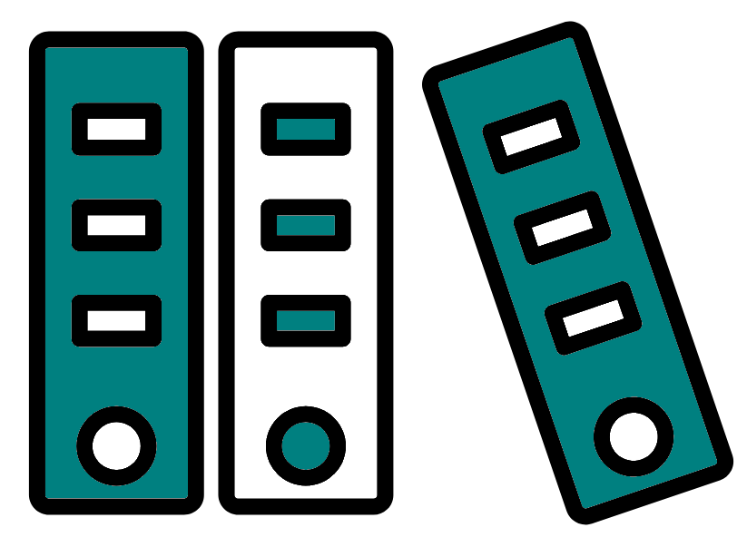
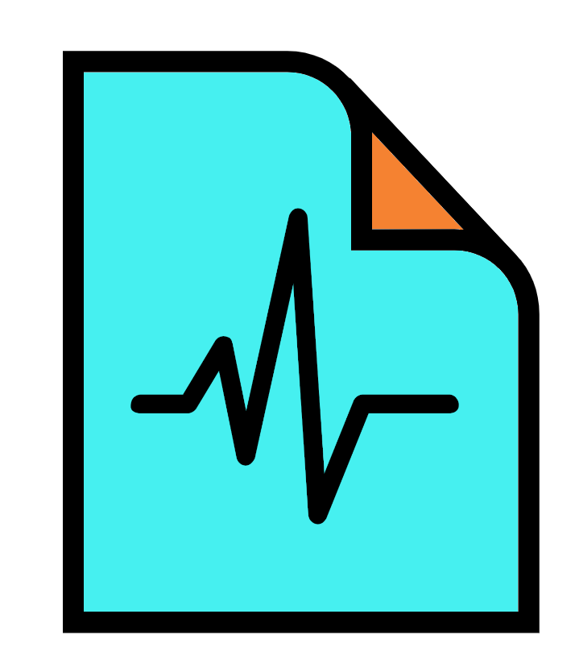
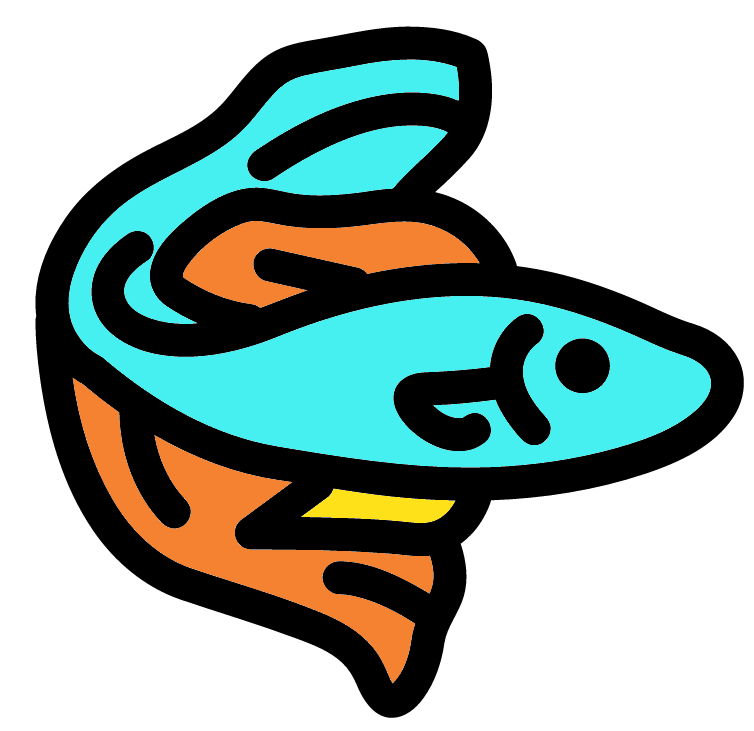

Background
In this section we are going to carry out a quick QC of ONT data using the tool suite NanoPack and the tool Porechop. For this we will use fastq files.
Before carrying out analysis we will cover some background of ONT data. This will include file formats, & basecalling.
File formats

Although we will only be using fastq files for this tutorial it is important to know the other file formats you may encounter when working with ONT data.
POD5
The POD5 format is the ONT created format to store nanopore DNA data in an easily accessible manner. The files end with the extension .pod5 and is normally created by the ONT tool MinKNOW. It is a collection of Apache Arrow tables (it is very unlikely you need to understand Apache Arrow tables).
The POD5 file format contains the following information:
- Reads Table: Describes the metadata for each read.
- Signal Table: Contains the signal data from the sequencer.
- Run Info Table: Contains information on the
MinKNOWruns that created the reads that are in the POD5 file.
The POD5 format is quite new and was released as an early preview in May 2022. Prior to POD5 they used Fast5 files. They changed to POD5 with the following design goals in mind:
- Good write performance for MinKNOW
- Recoverable if the writing process crashes
- Good read performance for downstream tools, including basecall model generation
- Efficient use of space
- Straightforward to implement and maintain
- Extensibility
POD5 links:
Fast5

The Fast5 format was the previous format used to store raw data from ONT machine. It is now a legacy format. However, if you use older data for your research you may encounter it.
The format contains the signal data from the pore which can be processed into more useful files.
Fast5 files can contain:
- Raw signal data
- Run metadata
- fastq-basecalls
- Other additional analyses
The Fast5 file format is an implementation of the HDF5 file format specifically for ONT sequencing data. For more information on Fast5 and a tool to interface with these types of file please see: https://github.com/nanoporetech/ont_fast5_api
You can convert a Fast5 file to a Pod5 file with the pod5 tools command pod5 convert fast5
Summary file
The MinION and GridION output a single sequencing summary file in addition to the POD5/Fast5 files. This file contains metdata which describes each sequenced read.
We will not use POD5, Fast5 or summary files for this tutorial as they are not needed most of the time. It is likely these files will not be initially provided to you by a sequencing service as they are very large. However, if you do require them you can always ask but be careful with how long the sequencing centre will retain your data.
BAM file
BAM files (.bam) are the binary version of SAM files (.sam).
- SAM stands for “Sequence Alignment/Map” (the B in BAM is Binary).
- SAM files are tab delimited and contain alignment information.
- BAM files are not human readable whilst SAM files are.
- SAM files are larger than BAM.
Generally programs that can work on SAM files can also work on BAM files. Due to the size difference it is preferable to store data in BAM format over SAM. Even though a BAM file is smaller than its matching SAM file, BAM files are still very large and can be >100GB.
It can be useful to contain unaligned reads from sequencing machines (e.g. PacBio and ONT) in BAM files as they can contain more metadata in the header and per-record auxiliary tags compared to fastq files.
If you are working with SAM/BAM files the following link will prove useful: https://www.htslib.org/
For more information on the SAM and BAM format please see: https://samtools.github.io/hts-specs/SAMv1.pdf
fastq file
The fastq file format is very consistent and so there is no real difference between fastq files for Illumina, PacBio, and ONT data.
All fastq files will contain a number of lines divisible by 4. This is because each entry/sequence will take up four lines consisting of the following information:
- Header for fastq entry known as the fastq header.
- This always begins with a '@'
- This is where you might see the most difference between different data. Different machines and different public databases will use different formats for fastq headers.
- Sequence content
- Quality header
- Always begins with a '+'. Sometimes also contains the same information as the fastq header.
- Always begins with a '+'. Sometimes also contains the same information as the fastq header.
- Quality
- Each base in the 2nd line will have a corresponding quality value in this line.
- Note this uses Phred encoding, of which there are different formats. Most, if not all, new files will use Phred+33 but be careful if you are using older data as it may use a different one. See the "Encoding" section in the following link for more info: https://en.wikipedia.org/wiki/FASTQ_format.
- NOTE: '@' can be used as a quality value.
An example of the information of one sequence/entry is:
@Sequence 1
CTGTTAAATACCGACTTGCGTCAGGTGCGTGAACAACTGGGCCGCTTT
+
=<<<=>@@@ACDCBCDAC@BAA@BA@BBCBBDA@BB@>CD@A@B?B@@
Basecalling

In short, basecalling is the conversion of ONT signals to bases and quality. This step converts the POD5/Fast5 files to BAM and/or fastq files.
There are many tools to carry out basecalling with ONT data. ONT sequencing machines carry this out with in built programs. However, if you are interested in the tools used for this the primary ones are MinKNOW, Guppy, Dorado, and Albacore. Unfortunately it is quite hard to find information about these tools unless you own an ONT machine.
We will not go into any more detail about basecalling as this is normally carried out by the machine/sequencing centre. Instead please find some useful links below if you would like to know more.